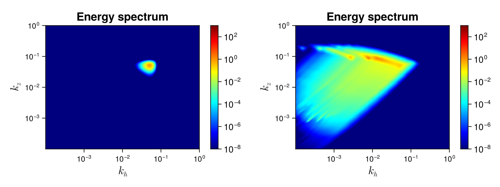

Stratified_Asympsolver
Internal Gravity Waves (IGW) propagate in stratified flows like the oceans and atmospheres. They are therefore important for geophysical applications (see Lvov et al., J. Phys. Oceanogr. 42, 669–691 (2012) for a review). The Stratified_Asymp solver is for the kinetic equation of IGW in the strong anisotropy (or hydrostatic) limit, where we consider that the horizontal wave vector $k_h$ is small compared to the vertical wave vector $k_z$.
Description
In the solver, we consider the WKE of $3D$-internal waves $\dot{n_{\bf k}}=St_k$. We consider that $n_{\bf k}$ is isotropic in the plane perpendicular to the gravity (the $z$-axis), and therefore it is a function of the magnitude of the horizontal wavevector $k_h$ and the vertical wavavector $k_z$ only. It explicitly reads
\[St_{{\bf k}} = 8 \pi ~ \int ~ \left[ \mathcal{R}^k_{12} - \mathcal{R}^1_{k2} - \mathcal{R}^2_{k1} \right] ~ k_{1h} k_{2h} ~ \mathrm{d} k_{1h} \mathrm{d} k_{2h}\]
where
\[\mathcal{R}^k_{12} = \frac{|V_{k12}|^2}{|g'| \Delta} \left( n_1 n_2 - n_{\bf k} n_1 - n_{\bf k} n_2 \right),\]
the interaction coefficients are
\[V_{k12} = \sqrt{\frac{k_h k_{1h} k_{2h}}{32}} \left( \frac{{\bf k}_h \cdot {\bf k}_{1h}}{k_h k_{1h}} \sqrt{\left| \frac{k_{2z}}{k_z k_{1z}} \right|} + \frac{{\bf k}_h \cdot {\bf k}_{2h}}{k_h k_{2h}} \sqrt{\left| \frac{k_{1z}}{k_z k_{2z}} \right|} + \frac{{\bf k}_{1h} \cdot {\bf k}_{2h}}{k_{1h} k_{2h}} \sqrt{\left| \frac{k_z}{k_{1z} k_{2z}} \right|} \right),\]
the determinant is
\[\Delta = \frac{1}{2} \sqrt{(- k_h + k_{1h} + k_{2h}) (k_h - k_{1h} + k_{2h}) (k_h + k_{1h} - k_{2h}) (k_h + k_{1h} + k_{2h})},\]
and
\[g' = \frac{k_{1h} {\rm sign}(k_{1z})}{k_{1z}^2} - \frac{k_{2h} ~ {\rm sign}(k_{2z})}{k_{2z}^2}.\]
This WKE results from assuming axisymmetry around the stratification axis ${\bf e}_{z}$. The dispersion relation is
\[\omega_k=N k_h/|k_z|\]
with $N$ the buoyancy frequency. $k_{1z}$, $k_{2z}$ are given by the solution of the resonance conditions, i.e. the joint conservation of momentum and energy in each triadic interaction (${\bf k} = {\bf k}_1 + {\bf k}_2$ and $\omega_k = \omega_1 + \omega_2$ for $\mathcal{R}^k_{12}$ and so on). See Lvov and Tabak, Phys. Rev. Lett. 87, 168501 (2001), Dematteis and Lvov, JFM 915, A129 (2021) and Labarre et al., arXiv, 2407.11469 (2024).
This wave kinetic equation conserves the total energy
\[H = \int \omega_{\bf k} n_{\bf k} d{\bf k}.\]
Solver
Numerical method
We use the symmetry $k_1 \leftrightarrow k_2$ to write the collision integral as
\[St_{\bf k} = St(k_h,|k_z|) = 4 \pi \int ~ \frac{L(p,q)}{\Delta(p,q)} ~ \mathrm{d}p \mathrm{d}q\]
The integral is performed over the kinematic box $(p,q) \in [-k_h,k_h] \times [0,q_{\rm max}]$, $q_{\rm max}$ being a cut-off ($=2k_{h,{\rm max}}$ by default). the kinematic box depends on $k_h$ so you can change the number of grid points and cut-offs for each $k_h$. See kinematic_box for more details.
We use the method L_vs to compute the term
\[L(p,q) = \left. \frac{|V_{k12}|^2}{|g'|} \left( n_1 n_2 - n_{\bf k} n_1 - n_{\bf k} n_2 \right) k_{1h} k_{2h} \right|_{R_k} - 2 \left. \frac{|V_{k12}|^2}{|g'|} \left( n_1 n_2 - n_{\bf k} n_1 - n_{\bf k} n_2 \right) k_{1h} k_{2h} \right|_{R_1},\]
where we use the notation $R_k$ (respectively $R_1$) to indicate that the terms are evaluated on the resonant manifold ${\bf k} = {\bf k}_1 + {\bf k}_2$, $\omega_{\bf k} = \omega_1 + \omega_2$ (respectively ${\bf k}_1 = {\bf k} + {\bf k}_2$, $\omega_1 = \omega_{\bf k} + \omega_2$). For each case ($R_k$ or $R_1$), there are two branches, i.e. two solutions for $k_{1z}$ that coded in k1zkp_vs, k1zkm_vs, k1z1p_vs and k1z1m_vs.
The denominator
\[\Delta(p,q) = \frac{1}{2} \sqrt{(k_h^2-p^2) q (2 k_h+q)}\]
is zero at the borders of the kinematic box $p = \pm k_h$ and/or $q=0$, leading to integrable singularities that must be treated for accurate results.
For the contribution of the grid points with $q = 0$, we use
\[\int\limits_0^{\delta k_h} ~ \frac{L(p,q)}{\Delta(p,q)} ~ \mathrm{d}q \simeq L(p,\delta k_h) \sqrt{ \frac{2 \delta}{k_h^2-p^2}}\]
with $\delta \ll 1$.
For the contribution of the grid points with $p = -k_h$, we use
\[\int\limits_{-k_h}^{(-1+\xi) k_h} ~ \frac{L(p,q)}{\Delta(p,q)} ~ \mathrm{d}p \simeq L((-1+\xi)k_h,q) \sqrt{\frac{2 \xi}{q(2k_h+q)}}\]
with $\xi \ll 1$. The contribution of grid points with $p = k_h$ is computed in the same way.
For the two grid points with $p = \pm k_h$ and $q=0$, we use
\[\int\limits_0^{\delta k_h} \int\limits_{\pm k_h}^{\pm(-1+\xi) k_h} ~ \frac{L(p,q)}{\Delta(p,q)} ~ \mathrm{d}p \mathrm{d}q \simeq L(\pm(-1+\xi) k_h,\delta k_h) 2 \left( \pi - 2 \arcsin (1-\xi) \right) \arcsin \left( \sqrt{\delta/2} \right).\]
We use the logarithmic two-dimensional grid wave_spectrum_khkz to represent the waveaction spectrum $n_{\bf k}$. The different options are described in the Stratified_Asymp documentation.
Note the if we use $M$ nodes to represent each coordinate of the Fourier space, then, the numerical cost of computing the collisional integral is of the order of $M^4$ operations, which is prohibitive. Well resolved numerical simulations with this solver therefore requires clusters.
Using the Stratified_Asymp solver
As all the other WavKinS solvers, we need to create a Stratified_Asymp structure containing all the fields, working space, diagnostics, etc.
using WavKinS
# Create a waveaction structure containing the basic grid
Mh = 16 # set the number of nodes for horizontal wave number
Mz = 16 # set the number of nodes for vertical wave number
khmin = 5e-3 # minimal horizontal wave number
khmax = 1e0 # maximal horizontal wave number
kzmin = 5e-3 # minimal vertical wave number
kzmax = 1e0 # maximal vertical wave number
Nk = wave_spectrum_khkz(khmin,khmax,Mh,kzmin,kzmax,Mz)
# Creating a Stratified_Asymp run structure with default parameters.
Run = WavKinS.Stratified_Asymp(Nk);Diagnostics and special post-processing
The standard diagnostics should work for this system.
In src/physical_systems/Stratified/special.jl, we also have implemented other methods to compute and plot spectra using other coordinates.
The function compute_ωkz_spectrum computes the $(\omega_{\bf k},k\simeq |k_z|)$ spectrum, which is widely used in oceanographic studies (Olbers et al., J. Phys. Oceanogr. 50, 751-771 (2020)).
The function compute_ξkz_spectrum computes the $(\xi_{\bf k}\equiv k_h/k_z^2,|k_z|)$ spectrum. $\xi_{\bf k} \simeq \xi_1 \simeq \xi_2$ for Induced Diffusion interactions (Lanchon and Cortet, Phys. Rev. Lett. 131, 264001 (2023)), so the spectrum develops along iso-$\xi_{\bf k}$ lines.
We also have implemented functions for plotting these spectra.
Testing convergence of the collisional integral
WavKinS provide a simple test of the numerical convergence of the computation of the collisional integral. The testing script is located in /run/tests/physical_systems/tests_Stratified_Asymp.jl.
Theoretically, the collisional integral should conserve the waveaction and the energy, which means that
\[2 \times 2 \pi \int_0^{k_{h{\rm max}}} \int_0^{k_{z{\rm max}}} \omega_{\bf k} St_{\bf k} k_h \mathrm{d}k_h \mathrm{d}k_z = 0.\]
The following numerical test evaluates those integrals and check the convergence to $0$.
using WavKinS
function nk_test(kh,kz)
return abs(kz^2)*exp(-kh - abs(kz)) * kh^1.5/(1. + abs(kz))/118
end
println("---------------------------------------------------------------------")
println("Testing collisional integral")
println("")
for j = 3:7
Mh = 2^j
Mz = 2^j
khmin = 1e-2
khmax = 1e2
kzmin = 1e-2
kzmax = 1e2
Nk = wave_spectrum_khkz(khmin,khmax,Mh,kzmin,kzmax,Mz)
Run = Stratified_Asymp(Nk; interp_scheeme=WavKinS.bilin_interp_khkz, integ_scheeme=integrate_with_log_bins_khkz)
kkh = Nk.kkh
kkz = Nk.kkz
kk = Nk.kk
KKH = kkh .* ones(length(kkz))'
KKZ = ones(length(kkh)) .* kkz'
@. Nk.nk = nk_test.(KKH, KKZ);
WavKinS.St_k!(Run)
Flux = wave_spectrum_khkz(khmin,khmax,Mh,kzmin,kzmax,Mz)
@. Flux.nk = Run.Sk.nk * Run.ω.(KKH, KKZ) * KKH * Run.dΩ;
Ene = energy(Run)
FluxNumH = total_density_flux(Run, Run.ω)
println("Mh = ", Mh, ", Mz = ", Mz, ", Integral flux num: dH/H=", FluxNumH / Ene)
end
println("")
println("---------------------------------------------------------------------")The output of this test is
---------------------------------------------------------------------
Testing collisional integral for energy conservation
Mh = 8, Mz = 8, Integral flux num: dH/H=253.3645103905745
Mh = 16, Mz = 16, Integral flux num: dH/H=3.377632098174059
Mh = 32, Mz = 32, Integral flux num: dH/H=0.5714735429013132
Mh = 64, Mz = 64, Integral flux num: dH/H=0.12038700544323301
Mh = 128, Mz = 128, Integral flux num: dH/H=0.026346960726081035
---------------------------------------------------------------------We see that the error on energy conservation roughly decreases as $M^{-2}$.
Theoretical predictions
The only power law steady spectrum was found numerically (see Lvov et al., J. Phys. Oceanogr. 40, 2605-2623 (2010))
\[n_{\bf k} \propto k_h^{-3.69} |k_z|^{0}.\]
Yet, any perturbation of the $k_z$ exponent would lead to a divergence of the collision integral, making the realizability of this spectrum unclear.
Running the Stratified_Asymp solver
WavKinS provides a ready to use script to obtain out-of-equilibrium steady states of the WKE. The script is similar to the one presented in the tutorial and can be found in /run/simple/RunSimpleEvolution_Stratified_Asymp.jl.
This script runs a simulation with very coarse resolution $M_h = M_z = M = 16$. Even resolution $M \simeq 40$ requires supercomputers due to the $M^4$ numerical cost.
Running a similar script in a HPC cluster using 128 cores and a resolution of $M=80$ takes several weeks. The results is displayed in the figure 
On the left, we observe a very early stage spectrum where only wavectors close to the forcing are excited. On the right, the spectrum is well developed and the system is close to a steady state.
List of structures and methods for Stratified solvers
WavKinS.L_vs — MethodL_vs(ih,iz,p,q,Nk,val_nk,interp_scheeme)Integrand of the collision integral multiplied by $Δ$.
ih,iz: external wave vector indicesp,q: coordinates on the kinematic boxNk: wave action spectrumval_nk,interp_scheeme: used for interpolation
WavKinS.V1_Strat_Asymp — MethodV1_Strat_Asymp(kh,kz,k1h,k1z,k2h,k2z)Interaction coefficient on the resonant manifold ${\bf k}_1 = {\bf k} + {\bf k}_2$, $\omega_1 = \omega_{\bf k} + \omega_2$
kh,k1h,k2h: horizontal wave vector moduluskz,k1z,k2z: vertical wave vector
WavKinS.Vk_Strat_Asymp — MethodVk_Strat_Asymp(kh,kz,k1h,k1z,k2h,k2z)Interaction coefficient on the resonant manifold ${\bf k} = {\bf k}_1 + {\bf k}_2$, $\omega_{\bf k} = \omega_1 + \omega_2$
kh,k1h,k2h: horizontal wave vector moduluskz,k1z,k2z: vertical wave vector
WavKinS.dg_vs — Methoddg_vs(k1h,k1z,k2h,k2z)Jacobian arizing from resonance in frequency:
$g' = k_{1h} {\rm sign}(k_{1z})/k_{1z}^2 - k_{2h} {\rm sign}(k_{2z})/k_{2z}^2.$
k1h,k2h: horizontal wave vector modulusk1z,k2z: vertical wave vectors
WavKinS.k1z1m_vs — Methodk1z1m_vs(kh,kz,k1h,k2h)$k_{1z}$ solution of ${\bf k}_1 = {\bf k} + {\bf k}_2$, $\omega_1 = \omega_{\bf k} + \omega_2$ (branch -):
$k_{1z} = \frac{k_z}{2k_h} \left( k_h - k_{1h} + k_{2h} - \sqrt{ (-k_h + k_{1h} - k_{2h})^2 + 4 k_h k_{1h} } \right).$
kh,k1h,k2h: horizontal wave vector moduluskz: vertical wave vector
WavKinS.k1z1p_vs — Methodk1z1p_vs(kh,kz,k1h,k2h)$k_{1z}$ solution of ${\bf k}_1 = {\bf k} + {\bf k}_2$, $\omega_1 = \omega_{\bf k} + \omega_2$ (branch +):
$k_{1z} = \frac{k_z}{2k_h} \left( k_h + k_{1h} + k_{2h} - \sqrt{ (k_h + k_{1h} + k_{2h})^2 - 4 k_h k_{1h} } \right).$
kh,k1h,k2h: horizontal wave vector moduluskz: vertical wave vector
WavKinS.k1zkm_vs — Methodk1zkm_vs(kh,kz,k1h,k2h)$k_{1z}$ solution of ${\bf k} = {\bf k}_1 + {\bf k}_2$, $\omega_{\bf k} = \omega_1 + \omega_2$ (branch -):
$k_{1z} = \frac{k_z}{2k_h} \left( k_h - k_{1h} - k_{2h} - \sqrt{ (k_h - k_{1h} - k_{2h})^2 + 4 k_h k_{1h} } \right).$
kh,k1h,k2h: horizontal wave vector moduluskz: vertical wave vector
WavKinS.k1zkp_vs — Methodk1zkp_vs(kh,kz,k1h,k2h)$k_{1z}$ solution of ${\bf k} = {\bf k}_1 + {\bf k}_2$, $\omega_{\bf k} = \omega_1 + \omega_2$ (branch +):
$k_{1z} = \frac{k_z}{2k_h} \left( k_h + k_{1h} + k_{2h} + \sqrt{ (k_h + k_{1h} + k_{2h})^2 - 4 k_h k_{1h} } \right).$
kh,k1h,k2h: horizontal wave vector moduluskz: vertical wave vector
WavKinS.ω_Stratified_Asymp — Methodω_Stratified_Asymp(kh, kz; N=1.0)Internal gravity wave frequency in the hydrostatic limit
kh: horizontal wave vector moduluskz: vertical wave vectorN=1.0: buoyancy frequency
WavKinS.Stratified_Asymp — TypeStratified_AsympSimulation structure for internal gravity wave turbulence in the hydrostatic limit $k_h \ll |k_z|$. It contains
name::String #name of the simulation type
Nk_arguments::Int # Number of arguments of ``n_k``. 1: (fully symetric) , 2: (cylindrical average in 3D or mirror symmetric in 2D), 3: Only mirror symmetric in 3D
ω # Dispersion relation. This is a function of ``k``. It takes `Nk_argument` arguments
Nk::wave_spectrum_khkz #wave action
Sk::wave_spectrum_khkz #collisional integral
F1::wave_spectrum_khkz #working field
kin_box::kinematic_box #kinematic box: meshes for a (p) and q
FStp::Vector{Vector{Float64}} #Array of working fields for multithreading
FStq::Vector{Vector{Float64}} #Array of working fields for multithreading
partition::Vector{Tuple{UnitRange{Int64},UnitRange{Int64}}} #partition for multithreading
# Type of interpolation, integration, and time stepping scheemes
interp_scheeme::Interp_Scheeme
integ_scheeme::Integ_Scheeme
time_stepping::Time_Stepping
# Outputs and diagnostics
diags::diagnostic_container
t::Float64 #current time
N::Float64 #buoyancy (Brünt Väisälä) frequency
dimension::Int # physical dimension of the system (or of the isotropic sector)
dΩ::Float64 # surface of the unit sphere (or of the isotropic sector)
FD::force_dissipation # Contains all the terms about force and dissipation.WavKinS.Stratified_Asymp — MethodStratified_Asymp(Nk::wave_spectrum_khkz; interp_scheeme=bilin_interp_khkz,integ_scheeme=integrate_with_log_bins_khkz,time_stepping_scheeme=RK2_step,Mp=0,Mq=0,nthh=0,nthz=0,N=1.0)Constructor of a Stratified_Asymp structure. Optionally we set interpolation and time-stepping scheemes:
interp_scheeme:bilin_interp_khkz(default),cpow_interp_khkzinteg_scheeme:integrate_with_log_bins_khkz(default),integrate_with_cpow_khkztime_stepping_scheeme:Euler_step,RK2_step(default),RK4_step
You can also change:
Mp,Mq: number of grid points of the kinematic box in $p$ and $q$ directionsnthh,nthz: number of slices in $k_h$ and $k_z$ for multithreadingN=1.0: buoyancy frequency
WavKinS.St_k! — MethodSt_k!(Run::Stratified_Asymp)Compute collision integral for Stratified_Asymp.
WavKinS.compute_spectral! — Methodcompute_spectral(Run)Compute and store Stratified_Asymp current spectral quantities
Run: StratifiedAsymp WavKinS simulation structure containing the wave action ``n{\bf k}``
This routine computes and store in Run.diags.sp_outs the waveaction, energy spectra and their corresponding fluxes.
WavKinS.store_spectral! — Methodstore_spectral(Run::Stratified_Asymp)Compute and store Stratified_Asymp spectral quantities
Run: StratifiedAsymp WavKinS simulation structure containing the wave action ``n{\bf k}``
This routine computes and store in Run.diags.sp_store the waveaction, and the energy and waveaction flux spectra.
WavKinS.compute_ξkz_spectrum — Methodcompute_ξkz_spectrum(Run; ρ=one)
Compute $(ξ_{\bf k},|k_z|)$ spectrum for the quantity with spectral density ρ, where $ξ_{\rm k}=k_h/k_z^2$. It relates to the 3D wave action spectrum $n_{\bf k}$ by $s(ξ_{\bf k},|k_z|) = 2 \rho_{\bf k} ξ_{\bf k} k_z^4 \mathrm{d} \Omega n_{\rm k}$.
WavKinS.compute_ωkz_spectrum — Methodcompute_ωkz_spectrum(Run; ρ=one)
Compute $(\omega_{\bf k},|k_z|)$ spectrum for the quantity with spectral density ρ. It relates to the 3D wave action spectrum $n_{\bf k}$ by $s(\omega_{\bf k},|k_z|) = 2 \rho_{\bf k} \omega_{\bf k} (k_z/N)^2 \mathrm{d} \Omega n_{\rm k}$.
WavKinS.plot_slices_kzξ_spectrum! — Methodplot_slices_kzξ_spectrum!(Run; ρ=one, title="Quantity spectrum")
Plot slices of the $(ξ_{\bf k},|k_z|)$ spectrum for the quantity with spectral density ρ. See compute_ξkz_spectrum.
WavKinS.plot_slices_kzω_spectrum! — Methodplot_slices_kzω_spectrum!(Run; ρ=one, title="Quantity spectrum")
Plot slices of the $(ω_{\bf k},|k_z|)$ spectrum for the quantity with spectral density ρ. See compute_ωkz_spectrum.
WavKinS.plot_slices_ξkz_spectrum! — Methodplot_slices_ξkz_spectrum!(Run; ρ=one, title="Quantity spectrum")
Plot slices of the $(ξ_{\bf k},|k_z|)$ spectrum for the quantity with spectral density ρ. See compute_ξkz_spectrum.
WavKinS.plot_slices_ωkz_spectrum! — Methodplot_slices_ωkz_spectrum!(Run; ρ=one, title="Quantity spectrum")
Plot slices of the $(ω_{\bf k},|k_z|)$ spectrum for the quantity with spectral density ρ. See compute_ωkz_spectrum.
WavKinS.plot_ξkz_spectrum! — Methodplot_ξkz_spectrum!(Run; ρ=one, title="Quantity spectrum")
Plot $(ξ_{\bf k},|k_z|)$ spectrum for the quantity with spectral density ρ. See compute_ξkz_spectrum.
WavKinS.plot_ω_spectrum_density! — Methodplot_ω_spectrum_density!(Run; ρ=one, title="Quantity spectrum")
Plot frequency spectrum for the quantity with spectral density ρ by integrating the $(ω_{\bf k},|k_z|)$ spectrum over $|k_z|$. See compute_ωkz_spectrum.
WavKinS.plot_ωkz_spectrum! — Methodplot_ωkz_spectrum!(Run; ρ=one, title="Quantity spectrum")
Plot $(ω_{\bf k},|k_z|)$ spectrum for the quantity with spectral density ρ. See compute_ωkz_spectrum.